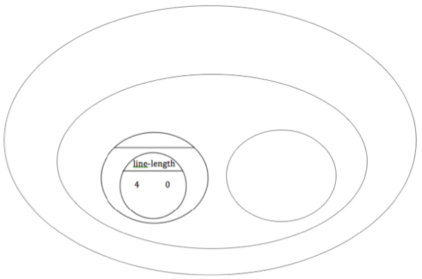

The distance between x_1 and x_2 is computed by (line-length x1 x2). The distance between y_1 and y_2 is computed by (line-length y1 y2). Below is the equation to compute the hypotenuse of a right triangle with those amount for legs:
√( line\mbox-length(x_2, x_1)^2 + line\mbox-length(y_2, y_1)^2 )
Suppose your player is at (0, 2) and a character is at (4, 5). What is the distance between them?
1. Identify the values of x_1, y_1, x_2, and y_2
| x_1 | y_1 | x_2 | y_2 |
|---|---|---|---|
(x-value of 1st point) |
(y-value of 1st point) |
(x-value of 2nd point) |
(y-value of 2nd point) |
|
The equation to compute the distance between these points is:
√( line\mbox-length(4, 0)^2 + line\mbox-length(5, 2)^2 )
2. Translate the expression above, for (0,2) and (4,5) into a Circle of Evaluation below.
Hint: In our programming language sqr is used for x^2 and sqrt is used for √x

{kind=link}
3. Convert the Circle of Evaluation to Code below.
These materials were developed partly through support of the National Science Foundation,
(awards 1042210, 1535276, 1648684, and 1738598).  Bootstrap by the Bootstrap Community is licensed under a Creative Commons 4.0 Unported License. This license does not grant permission to run training or professional development. Offering training or professional development with materials substantially derived from Bootstrap must be approved in writing by a Bootstrap Director. Permissions beyond the scope of this license, such as to run training, may be available by contacting contact@BootstrapWorld.org.
Bootstrap by the Bootstrap Community is licensed under a Creative Commons 4.0 Unported License. This license does not grant permission to run training or professional development. Offering training or professional development with materials substantially derived from Bootstrap must be approved in writing by a Bootstrap Director. Permissions beyond the scope of this license, such as to run training, may be available by contacting contact@BootstrapWorld.org.